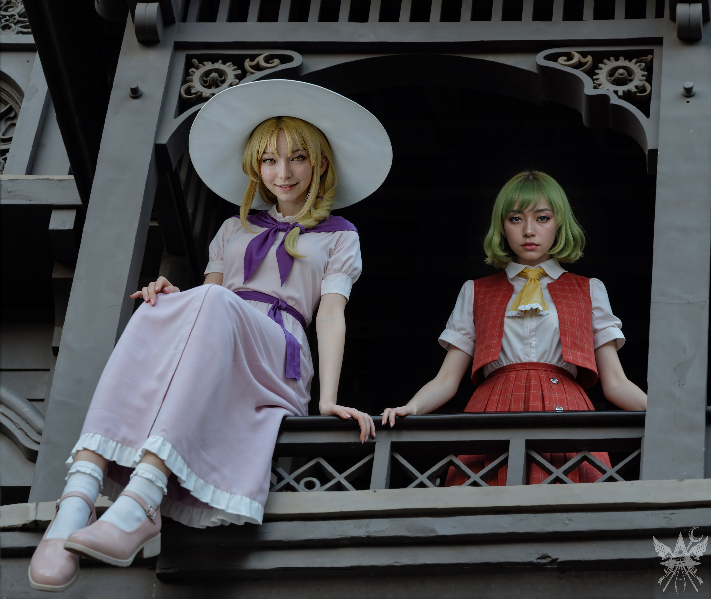
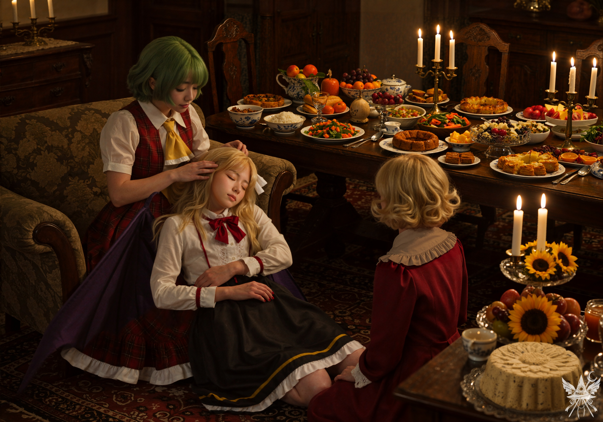

「屋敷の主なら、私なんかよりずっと治せる力を持っているんじゃないかしら。呼んでみたら？」静寂が落ちた。くるみとエリーは顔を見合わせ、傍らでは血まみれの少年が微かに呻き声を上げている。
「幽香様を？ うーん、それはどうかしらね……」くるみは露骨に顔をしかめた。
対照的に、エリーは二つ目のリンゴをかじりながらクスクスと喉を鳴らす。「まあ、この子はどうでもいいけど、呼ぶだけ呼んでみれば？」
「幽香様！ 幽香様ぁぁぁ！ 助けてください！ 早くー！」オレンジは躊躇うことなく屋敷へ向き直り、杖を空高く掲げて叫んだ。眩い閃光が弾ける。
エリーは鼻で笑い、皮肉げに肩をすくめた。「ったく、今日はナマズのエサやり免除かな。久々に戦ったら腰痛いわ」
「見て！ 聞こえたみたい！」オレンジが弾んだ声でバルコニーを指さした。見上げると、重厚な手すりの向こうに二つの気配がある。一人は、地下施設で別れたはずのルイズだ。そしてもう一人——。

圧倒的なまでの「上位者」の気配が、肌を粟立たせた。片や、眼下の惨劇を無邪気に楽しむような、嗜虐的な笑み。もう片方は、侵入者を路傍の石か肥料程度にしか認識していないような、絶対零度の静けさ。バルコニーの暗がりから見下ろす冷徹な視線が、そのままこの館のパワーバランスを物語っていた。
「幽香さま、降りてきてくださーい！！！」オレンジの必死の叫びに、エリーが控えめに吹き出した。
「降りるですって？ ここからでもよ〜く見えているわよ。よりにもよってうちの門の前で、ねぇ。まったく、かわいそうな旅人ね……」上空から降る声は、ひどく甘く、そして退屈しのぎの玩具を見つけたかのように楽しげだった。
「でも、この人、死にそうなの！ それに、幽香様のためにエレンの薬を持ってきたらしいの！ お願い、助けて！」
「あら、そうなの？ それなら仕方ないわね。せっかく来てくれた使いを放っておくわけにはいかないわ。私が必ず、助けてあげる♡」ふわりと傘が開く音がしたかと思うと、主は優雅な身のこなしで宙を舞い、石畳に降り立った。上ではルイズが袋菓子を取り出し、バリバリと下品な音を立てて高みの見物を決め込んでいる。
「どうしたの、坊や？ 顔色が悪いわよ」主が近づくにつれ、くるみとオレンジは怯えたように後ずさった。（私も本能的な警鐘に従い、静かに距離を取る）
「僕……エリーたんを……守ろうと……うう……彼女が……襲われてたから……エリーたん、かわゆいっす……」血の泡を吹きながら、太郎はなおも妄言を垂れ流す。
幽香と呼ばれた主はかがみ込み、少年のポケットから薄緑色の液体が入った小瓶を二つ取り出した。躊躇いなく一つを飲み干し、もう一つを懐へと仕舞う。「坊や、薬をありがと！ す〜ごく助かったわ。あら、傷を治してほしいのね？」
「はいっす！ お願いします、幽香様！」なぜか太郎の声に生気が戻る。
「あらあら、私の名前まで知っているの？ そんな人のお願いを断るわけにはいかないわ。もちろん、傷は治してあげる。それどころか、新しい服も、帽子もあげるわ」底知れぬ慈愛を孕んだ微笑み。
「僕も、幻想郷のみんなが持ってるような帽子をもらえるんすか！？ ずっと夢見てたんす！ あざっす！ 幽香様、マジ大好きっす！」
「こちらこそ、太郎くん。私もあなたの本当の名前を知っているわ……。ただ、太郎くんを復活させる前に、一つ小さな約束をしてほしいの」
「幽香様のためなら何でもするっす！ どんなフラグっすか！？」
「それはね、簡単なことよ。太郎くんにはこの屋敷にず〜っと一緒にいてほしいの。どう、いいかしら？」
数秒の沈黙。太郎は虚空を仰ぎ、ブツブツと呟き始めた。「一番。幽香の提案を受け入れる。二番。丁寧に断る。三番。代案を提案する。これが俺の選択……」（この男、死にかけているのに選択肢を口に出しているの……！？）
「一番を選ぶっす！ 幽香様の屋敷にずっといるっす！ 約束っす！」
満足そうに頷くと、幽香は太郎の血塗れの衣服を無造作に引き裂いた。そして、手にした小瓶の液体を、ぱっくりと開いた傷口へ容赦なく注ぎ込む。
耳を塞ぐ間もなかった。エリーはすでに耳を塞いでいる。鼓膜を破らんばかりの絶叫と痙攣。だが、傷口は肉芽を泡立たせながら、みるみるうちに塞がっていった。立ち上がった太郎は、尻尾を振る犬のように幽香へ抱きつこうと腕を伸ばした。
「シーッ！ 待って、まだよ」甘く妖艶な囁きが、その動きを縫い止める。「まずは、約束の帽子をプレゼントするわ」
「はいっす！ 仰せのままに！ ずっとそんなアイテムを夢見てたんすよ！」
「でもね、それは、と〜っても特別な帽子なの」耳まで裂けるような歪んだ笑顔と共に、滑らかな絹の小袋が取り出される。「じっとしててちょうだい、タ・ロウ・くん」
優しい声音に促され、太郎は期待に身を震わせて目を閉じた。次の瞬間、幽香はその頭からすっぽりと袋を被せ、首元の紐をギリリと容赦なく締め上げた。くぐもった、息苦しそうな喘ぎ声が漏れる。
「さあ、豚みたいに鳴くのよぉぉぉぉ！！」甘い声は突如として狂気を帯びた哄笑へと変わり、幽香は少年の顎を掴んで冷たい石畳へと力任せに叩きつけた。
「いやだ……幽香様……」微かな抵抗の声は、瞬時に伸びた無数の蔦によってきつく縛り上げられ、完全に封じられた。
生々しい真新しい傷痕が残る剥き出しの肌と、穢れを一切知らない豪奢な布地との対比が、圧倒的な主従関係を物語っていた。顔という個性を奪われ、墨で禍々しい文字が刻まれた袋を被らされたことで、彼はもはや「太郎」という人間ではなく、名もなき無個性の奴隷へと変質させられてしまったのだ。「死」から救済する対価が、「永遠の服従」という名の搾取。それを愛情深く撫でる主の穏やかな微笑みが、この絶対的な契約から二度と逃れられないことを静かに証明していた。
「皆さん、私のティーパーティーへようこそ！ メデアさんもね！」幽香は事も無げにそう言い放つと、蔦で縛り上げた肉塊を引きずりながら、館の奥へと消えていった。
＊＊＊
「太郎くん……かわいそうに……」オレンジがぽつりと呟いた。
「ねえ、オレンジ。私もあんな風に……されちゃうのかしら？」引きずり込まれた暗がりを見つめたまま、思わず声が漏れる。
「大丈夫だよ、メデたんは！ ねえ、心配しないでご飯にしよう！」オレンジはあっけらかんと笑い、私の手を引いて入り口へ歩き出す。
「でも、ご飯って……まさか、さっきの彼のことじゃないわよね？」
「えーっ、何言ってるの？ 幽香様はベジタリアンなんだよ！」無邪気な足取りで館へ踏み込む背中を、半ば呆れながら追う。
背後から、エリーがのんびりとした足取りで歩み寄ってきた。「あのガキは自業自得さ。あいつの運命が気になるなら教えてあげるよ。ああいうゴミは地下室に放り込まれて、そこで忘れられる方が身のためってことさ」シニカルに言い捨て、彼女もまた館へと姿を消す。
顔を上げると、いつの間にかバルコニーから降りてきていたルイズと目が合った。彼女は人懐っこい笑顔で手を振ってくる。（ええ、抗っても無駄ね）溜息を一つ吐き、私もその陰鬱な入り口へと足を踏み入れた。
外観の禍々しさとは裏腹に、館の内部は不思議なほどの居心地の良さに満ちていた。壁のキャンドルが淡い光を落とし、足元には毛足の長い絨毯が広がっている。
「さあ、食卓へどうぞ。今日はお嬢様もご機嫌のようね」エリーに促され、応接室へと足を踏み入れる。
そこは温かみのある魔法の光に包まれた、ひどく可愛らしい空間だった。巨大なテーブルには、色鮮やかな野菜のスープ、湯気を立てるグラタン、瑞々しい果物やゼリーといった豪勢な料理が所狭しと並べられ、中央にはヒマワリの種を使った見事なハルヴァ[1]ハルヴァ：ヒマワリ等の種に油脂と砂糖を加えて作られる菓子が鎮座している。（食事をしに来たわけではないのだけれど……）地下研究室から碌に口にしていなかった胃の腑が、甘い匂いに刺激されて微かに鳴った。
テーブルの奥に幽香が腰を下ろし、その脇をエリーとルイズ、くるみが固めている。メデアとオレンジも末席に着いた。
「遠慮しないで、メデア。外の世界から、しかもそんな珍しい国から素敵な女の子が来てくれたのは久しぶりだわ」幽香は優雅な所作でサラダを口へ運ぶ。
「ありがとうございます。ということは、ルイズが私のことをすべて話したのですね」表面上の礼節を保ちながら、探るように視線を向ける。
「ええ、すべて話したわ。新しい魔女が来てくれたのだもの、隠す必要なんてないでしょう？」ルイズは悪びれもせず、片目を閉じたままスープをすする。「お友達は多い方がいいに決まっているわ。あら、そういえば……あのジェットパックの不良少女は無事だったのかしら？」
「メデたんはね、里香だけじゃなくてわたしも助けてくれたの！ 牢屋から！ すごいでしょ！」オレンジが我が事のように胸を張った。

満たされた食欲と共に、部屋には和やかな弛緩が広がっていた。揺らめく暖色の灯りが、豪奢な家具の木目を柔らかく照らし出している。ソファに深々と腰掛けた幽香の膝には、すっかり満腹になったのか、無防備な寝息を立てるくるみが頭を預けていた。その髪を撫でる幽香の手つきは、先ほど人間を躊躇なく奴隷に貶めた者とは到底思えないほど、底知れぬ母性と慈愛に満ちている。エリーもまた、その光景を傍らで静かに見守っていた。
外の血生臭い狂気とは完全に隔絶された、童話の結末のような幸福な空間。だが、それが「侵入者の徹底的な排除と隷属」の上に成り立っている仮初めの安らぎであることを知っているメデアにとっては、かえって背筋が冷たくなるほどの不気味さを孕んでいた。
「メデア、こちらのコーヒーもいかが？ 絶品よ」ルイズが、トルコ式のコーヒーポットを差し出してくる。「魔界のコーヒーは最高なの。わざわざ持ってきて正解だったわね」
（さて、これからどう動くべきか……差し出されたカップから立ち昇る濃密な香りを嗅ぎながら、私は静かに思考を巡らせる。もう一度ルイズに取り引きを持ちかけ、姿を変えてもらう？いや、それでは異世界の門番の試練を抜けられない。ならば、オレンジにルイズの姿になってもらい、私が彼女を「護送」するという名目で……いや、あの子の性格ではすぐにボロが出るわ。
フレデリカは、この夢幻館にも別の次元が存在すると言っていた。ここで召喚を行うことは可能なはずだ。だが、この底知れないサディストである幽香が、見ず知らずの私の儀式をやすやすと許可するだろうか？オレンジから頼み込んでもらう？いや、下手に交渉材料を与えれば、どんな残酷な対価を要求されるか分かったものではない。）
手の中のカップは、決断を下せないメデアの迷いを映すように、微かに波打っていた。
[SYSTEM ALERT: 音響兵器デプロイ完了]
▼ 本章の絶望を1000%味わうための専用聴覚データ ▼
■ YouTube：『Lattice of Blood（鮮血のラティス）』